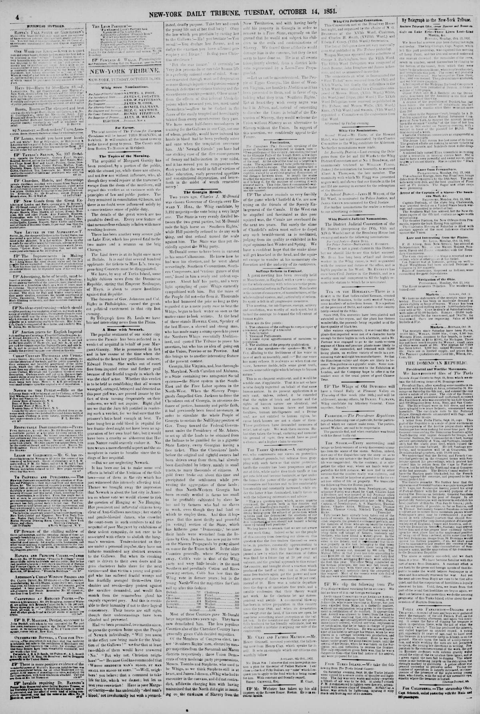

The British Consul wished to have the Haytien ports blockaded, but
https://www.loc.gov/resource/sn83030213/1851-10-14/ed-1/?sp=4

See the original pageVer la página original
The newspaper reported that Soulouque joined his army at Port-au-Prince with the avowed purpose of invading Dominican territory, prompting General Santana to proceed to the post of danger. While the British Consul desired to have Haytien ports blockaded, the French Consul opposed the measure in favor of a strong protest, which Soulouque might disregard. The publication also noted that the provided information was entirely one-sided.
El periódico notificó que Soulouque se incorporó a su ejército en Puerto Príncipe con el manifiesto propósito de invadir el territorio dominicano, lo que indujo al general Santana a trasladarse al puesto de mayor peligro. Si bien el cónsul británico pretendía que se bloquearan los puertos haitianos, el cónsul francés se opuso a dicha providencia en favor de una enérgica protesta, la cual Soulouque bien podría desatender. La nota observaba asimismo que las informaciones recibidas eran enteramente parciales.
Where this standsEn qué punto está
The full text of this article is still being prepared. Until it is ready, this page carries a summary, the passage found on the page, and the link to the original, which is always one click away.El texto completo de este artículo aún se está preparando. Hasta que esté listo, esta página lleva un resumen, el pasaje encontrado en la página y el enlace al original, que siempre está a un clic.
The passage this summary was written fromEl pasaje del que se escribió este resumen
The passage where this article was found, copied from the newspaper page itself, reading errors and all. This is exactly what the summary above is based on.El pasaje donde se encontró este artículo, copiado de la propia página del periódico, con sus errores de lectura y todo. Esto es exactamente aquello en lo que se basa el resumen de arriba.
caused him to return from the Cape to Port-au-
Prince, but he left for the North and was at Gonaives
al the last accounts. The British Consul wished to
have the Haytien ports blockaded, but the French
Consul opposed the measure, and proposed to try a
strong protest first
The Gazette remarks We further hear that the
appearance of General Santana was quite unexpected
at St. Yago, but Soulonque having joined his army
at Port-au-Prince with the avowed purpose of in-
vadivg the Donunican territory, General Sanatana
at onee proceeded to the post of danger Iu all
protas lity Soulongue will endeavor to establish his
ead quarters at Hincha (San Jan de Goava,) push-
ing his out posts, if possible, as far as Banica, and
St. Thonue fortunately General Sanatana is tos old
a soldier pot to secure those mountain passes where
Soulougue’s army may be exterminated it is sur-
med in well informed quarters that should Sou-
louque disregard the very recent protest of the repre-
sentatives of Eogland, rance and America, and in-
vade the Dominican territMry, Santana may retreat
before hum and at the proper time saddenly falling
upon his rear, place fn in the unpleasant position
of Leng cut oft from a retreat, at the same time that
the best Dominican troops from St Domingo would
oprose his further progress if so, we shall soon
have to announce Lo oar readers the success of the
Dominican troops, the utter discomforture of Sou.
louque’'s army, and the anpe xation of his dominions
to the Dominean Republie.
The above is entirely one-sided, and we don't
How to cite this articleCómo citar este artículo
New-York Daily Tribune. (1851). New-York [N.Y.], October 14, 185114 de octubre de 1851. DR in the American PressRD en la Prensa Norteamericana. Library of Congress, Chronicling America: https://www.loc.gov/resource/sn83030213/1851-10-14/ed-1/?sp=4
ReferencesReferencias
Library of Congress, Chronicling America: New-York Daily Tribune, October 14, 185114 de octubre de 1851.
Send an observationEnviar una observación
Does this article connect with your family, your town, or something you know? Did we get something wrong? Write to us. Observations go to the editor's inbox and are read by a person.¿Este artículo conecta con su familia, su pueblo o algo que usted conoce? ¿Nos equivocamos en algo? Escríbanos. Las observaciones llegan al buzón del editor y las lee una persona.
Send observationEnviar observación